Important
The provided description covers fields and features that are default or commonly used. The actual set of available elements may vary depending on your role and other system settings.
On the upper-left of the page, you can see your avatar, full name and statuses.
The first status shows that your are granted rights to use the system. The second status is called authentication status and shares the state of your password. As you can see your user page only being logged into the system, you will always see Enabled for the first status and Active for the other. When an administrator views your page, they will able to see values of your statuses.
In the upper-right part of the page there is the following set of action buttons:
Configuration—Click this button to configure how the interface will look for your, your email settings, and integrations. See the Configure Your Interface, Email Settings and Integrations action description.
Edit—Click this button to edit your profile. See the Edit Your Profile action description.
More Actions list:
Send Email—Click this action button to import fields into the entity. See the Send an Email action description.
Log Call—Click this action button to log or make a call. See the Log or Make a Call action description.
Assign Event—Click this action button to assign an event. See the Assign an Event action description.
Edit Menus—Click this action button to configure the main menu. See the Assign an Event action description.
Assign Task—Click this action button to assign a task. See the Assign a Task action description.
Change Password—Click this action button to change a password. See the Change a Password action description.
Reset Password—Click this action button to reset a password. See the Reset a Password action description.
Note
An administrator may add non-default buttons to this list. If you see such non-default buttons as Add Task, Add Event, Add Attachment in the More Actions drop-down, see the Activities guide for more information about actions that you can perform via them.
In the next row you, you can check which business unit owns your user record. Click the owner name to open the corresponding business unit view page. If you are logged into the organization with global access (i.e. technical organization that aggregates data from all organizations created in the system), then in brackets you will see the name of organization that owns the user.
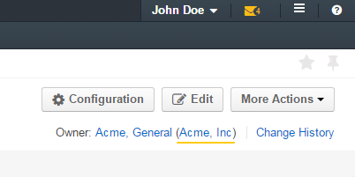Click the Change History link to see who, how and when modified your profile.
Other information is divided into three sections.
This section contains information about the user filled in when creating the user.
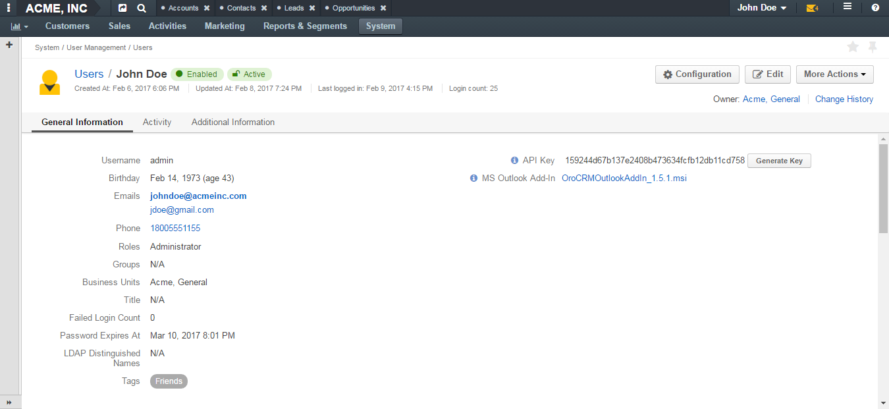| Field | Description |
|---|---|
| Username | A name that you use to log into the system. |
| Birthday | A date of your birth and your calculated age. |
| Emails | A list of your email addresses. The first one (in bold) is the your primary email. You receive system notifications to this address, and it’s a default address that appears in the From field in your emails. Point to the email address and click the Email icon next to it to immediately compose an email. Click the Hangouts icon to start making a call. 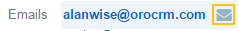 |
| Phone | Your phone number. Point to the phone number and click the Phone or Hangouts icon that appear next to it to immediately start logging or making a call.
|
| Roles | A list of roles assigned to you. |
| Groups | A list of groups to which you belong. |
| Business Units | A list of business units that you have access to. |
| Failed Login Count | If the corresponding security policy is enabled for the organization, this field contains a number of failed login attempts that you performed up to date. If such policy is disabled, N/A is displayed. As you can see your user page only being logged into the system and the counter cleans when you log in, you will always see 0. When an administrator views your page, they will able to see other values. |
| Password Expires At | If the corresponding security policy is enabled for the organization, this field contains a date and time when your password expires. If such policy is disabled, N/A is displayed. |
| LDAP Distinguished Name | A value of the dn LDAP field. This field is not empty only of your record has been imported from the LDAP server. |
| Tags | A list of tags added to your profile. Point to the the tag name (or N/A if no tags are defined) and click the Edit icon next to them to add a new tag. 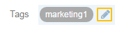 |
| API key | An API key generated for you. Click the Generate Key button to generate a new key. |
| MS Outlook Add-In | (For Enterprise Edition only) A link to the latest version of OroCRM add-in for Outlook. With this add-in you can synchronize contacts, tasks, and calendar events between OroCRM and your Outlook. Click the link to start the download. |
This section may also contain custom fields (e.g. Title on the screenshot above).
This section contains information about your activities: emails sent and received, calls, etc. If a user mentions you as a context for their activity, this activity will also appear in the list.
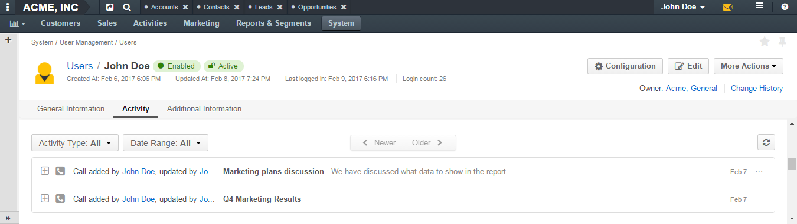You can filter activities by type and by date range when they took or will take place and browse them from the newest to the oldest and vice verse.
You can see who started the activity, its type, name and description, when it was created and number of comments added under it.
Click the activity to see detailed information about it.
You can add a comment under a particular activity. To do this, click the activity to expand it and click the Add Comment button. In the Add Comment dialog box, type your message. Use the built-in text editor to format your comment. You can also attach a file to your comment. For this, click the Upload link in the dialog box and locate the required file. When the comment is ready, click Add.
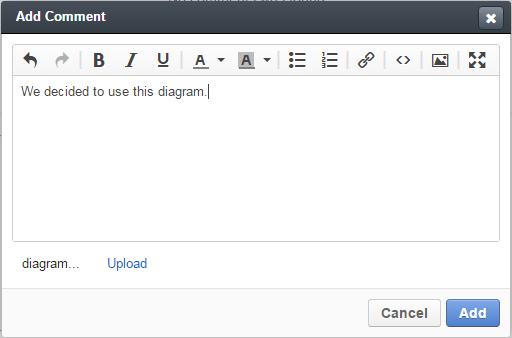To edit or delete a comment, click the ellipsis menu next to it and click the Edit or Delete icon correspondingly.
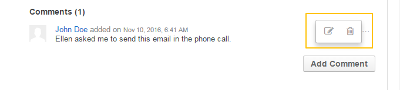You can add and delete an activity context. To delete a context for an activity, click the x icon next to the required context.
To add a context to the activity, click the Context icon in the ellipsis menu at the right end of the activity row. In the Add Context Entity dialog box, choose the desired context and click it to select.
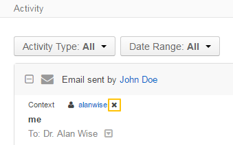 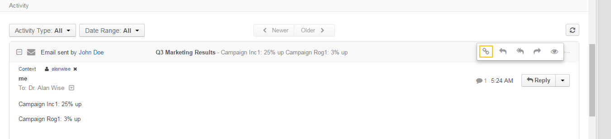You can open an activity view page. To do this, click the View icon in the ellipsis menu at the right end of the activity row.
For an email activity, you can reply / reply all / forward the corresponding email. To do this, click the corresponding icon in the ellipsis menu at the right end of the activity row.
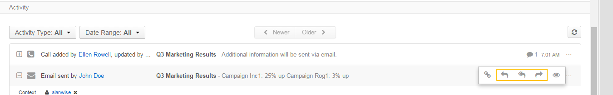Alternatively, you can select the required action from the list in the activity expanded area.
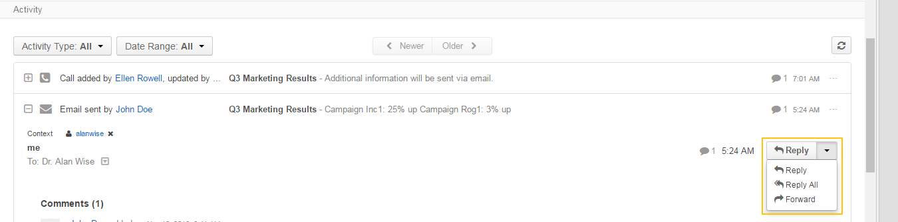You can delete a phone activity. To do this, click the Delete icon in the ellipsis menu at the right end of the activity row.
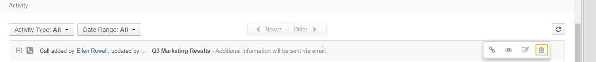For a phone activity, you can immediately start a call via Google Hangouts if such functionality is enabled. To do this, point to the specified phone number and click the Hangouts icon next to it.
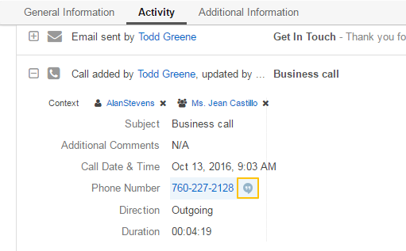For more information about activities, see the Activities guide.
This section contains information about your tasks and opened cases.
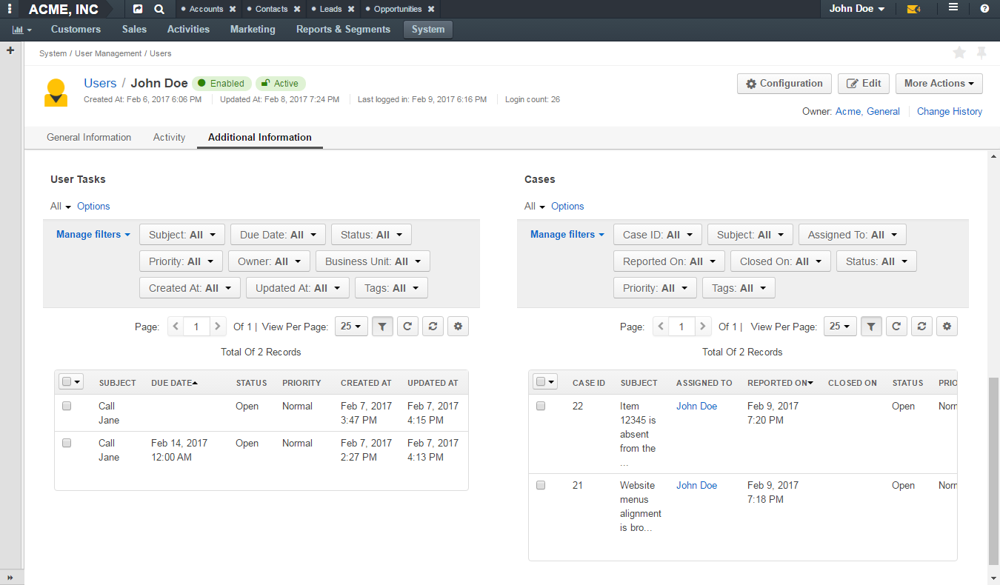This grid contains information about tasks assigned to you.
Tasks are activities that need to be accomplished. Keeping track on tasks helps organize the work process and ensure that all the important work is done.
You can filter tasks by a variety of parameters. To open the task view page, click this task in the grid.
For more information about tasks management, see the Tasks guide.
This grid contains information about cases assigned to you.
Cases are issues, problems or failures reported by customers or found internally. It is important to record, monitor and solve cases in time to ensure that small and big issues do not harm your the company business.
You can filter cases by a variety of parameters. To open the case view page, click this case in the grid.
For more information about cases management, see the Cases guide.
Related Topics